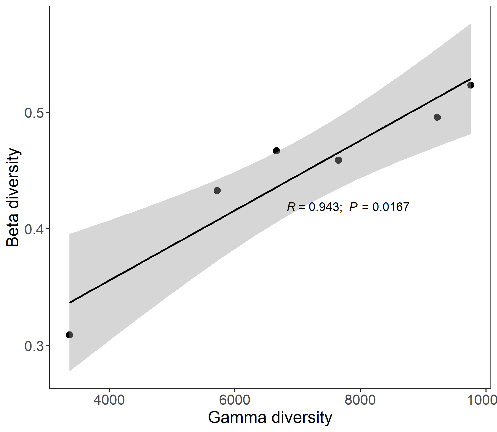
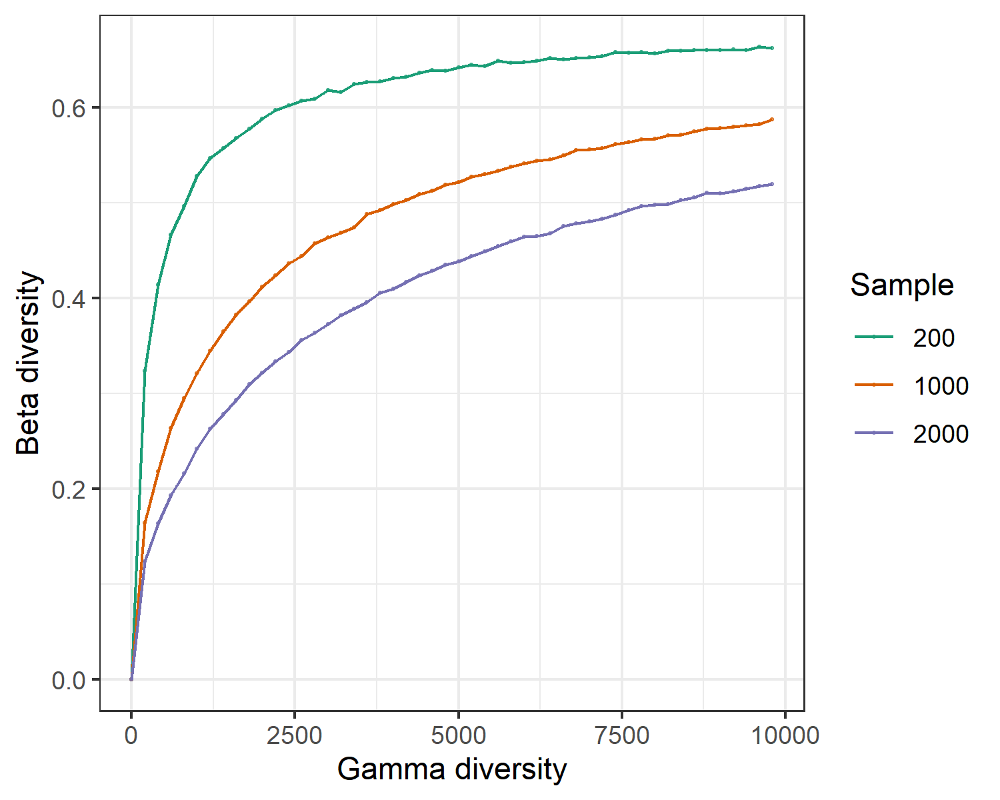

Chapter 12 mecodev package
The mecodev package (https://github.com/ChiLiubio/mecodev/) is designed for more extended analysis approaches based on the microeco package.
12.1 trans_rarefy
The class trans_rarefy in mecodev package can be used for the rarefaction and the following plotting to see whether the sequencing depth is enough to cover all the so-called species in the microbial community.
library(microeco)
library(mecodev)
data(sample_info_16S)
data(otu_table_16S)
# set.seed is used to fix the random number generation to make the results repeatable
set.seed(123)
tmp <- microtable$new(sample_table = sample_info_16S, otu_table = otu_table_16S)
tmp$tidy_dataset()
# trans_rarefy class
t1 <- trans_rarefy$new(tmp, alphadiv = "Observed", depth = c(0, 10, 50, 500, 2000, 6000, 10000, 15000, 20000))
t1$plot_rarefy(color = "Group", show_point = TRUE, add_fitting = FALSE)
t1$plot_rarefy(show_point = FALSE, add_fitting = TRUE)
t1$plot_rarefy(show_samplename = TRUE, color_values = rep("grey70", 100), show_legend = FALSE)
12.2 trans_ts
The class trans_ts is designed for the time series data analysis. A commonly used approach for modeling microbial ecology for time series data is the generalized Lotka-Volterra (gLV) model, the classical predator-prey systems. gLV models are based on ordinary differential equations that model the logistic growth of species; naturally capture predator-prey, amensalistic, and competitive interactions; and have been applied to study dynamics of microbial ecosystems. More importantly, from a practical perspective, gLV models have been used for a range of applications including identifying potential probiotics against pathogens, forecasting changes in microbial density, characterizing important community members (e.g., keystone species), and analyzing community stability (see (Li et al. 2019) and the references therein). Currently, the biomass estimation and biological interaction prediction approaches are implemented based on the beem package (Li et al. 2019). The example data ‘gut_microb_ts’ comes from the article (Gibbons et al. 2017).
# install the necessary packages
# For windows system:
install.packages("doMC", repos = "http://R-Forge.R-project.org")
# For linux or mac
install.packages("doMC")
# Then install the following packages
install.packages("lokern")
install.packages("monomvn")
install.packages("pspline")
devtools::install_github('csb5/beem')library(mecodev)
# load the example data in mecodev package; the input must be a microtable object
# There are several strict requirements on the sample_table; see the document of the class.
data("gut_microb_ts")
# generally, using filter_thres to filter the taxa with low abundance is crutial
# there are only 22 taxa in the example data, we use 0
t1 <- trans_ts$new(dataset = gut_microb_ts, filter_thres = 0.005)
# use minimal 30 times for iteration
t1$cal_biomass(min_iter = 30)
# return t1$res_biomass and t1$res_param
# t2 is a trans_network object
t2 <- t1$cal_network()
# use cluster_optimal; as the default cluster_fast_greedy can not be used for the directed network
t2$cal_module(method = "cluster_optimal")12.3 trans_gamma
The class trans_gamma is developed to explore the relationship between gamma diversity and beta diversity based on the methods from biogeographic studies(Zhang et al. 2020). Currently, the contents include the observed beta-gamma diversity relationship, simulated beta-gamma diversity relationship and the following plotting. If the observed gamma diversity and beta diversity are significantly correlated, species pool at regional scale (or maybe your defined scale, e.g., different treatments in the lab) can have large effect on the beta diversity. Thus, species pool should be first considered to explain beta diversity patterns. This class also provide simulation function to explore the relation between gamma diversity and beta diversity in the absence of any process other than random sampling based on the species log-normal distribution. We use the wetland data to show the observed beta-gamma diversity relationship.
library(microeco)
library(mecodev)
# load the example data
data(sample_info_16S)
data(otu_table_16S)
test <- microtable$new(sample_table = sample_info_16S, otu_table = otu_table_16S)
test$tidy_dataset()
test$rarefy_samples(sample.size = 10000)
# then create trans_gamma object
test1 <- trans_gamma$new(dataset = test, group = "Type", method = "bray")
test1$cal_observed(sample_size = NULL)
test1$res_observed
# use Spearman correlation
test1$plot_observed(cor_method = "spearman")
Let’s simulate the relation between gamma diversity and beta diversity in the absence of any process other than random sampling based on the species log-normal distribution.
# if you only run the simulation, dataset parameter is not necessary
test1 <- trans_gamma$new(method = "bray")
# use individul numbers at 200, 1000 and 2000, and hypothesize each species pool have 20 samples.
test1$cal_simulation(ncom = 20, ind_vect = c(200, 1000, 2000))
test1$plot_simulation(add_fitting = FALSE)